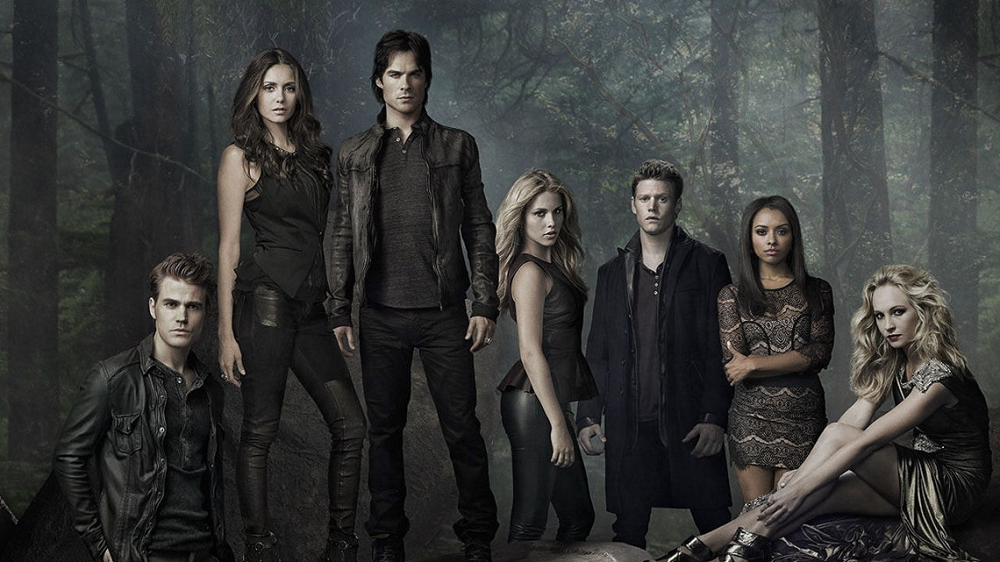

Tudo sobre The Vampire Diaries
The Vampire Diaries (bra: Diários de um Vampiro; prt: Diários do Vampiro) é uma série de televisão americana de drama sobrenatural e fantasia desenvolvida por Kevin Williamson e Julie Plec, baseada na série literária de mesmo nome, da autora L. J. Smith. Estreou na televisão americana pela emissora The CW em 10 de setembro de 2009 e ficou no ar até 10 de março de 2017, após oito temporadas.
A série é situada em Mystic Falls, Virgínia, uma pequena cidade fictícia assombrada por seres sobrenaturais de todas as espécies. O foco inicial é o triângulo amoroso entre a estudante Elena Gilbert (Nina Dobrev) e os irmãos Salvatore, Stefan (Paul Wesley) e Damon (Ian Somerhalder), dois vampiros condenados a viver a eternidade lutando pelo amor da mesma mulher. O episódio piloto foi ao ar em 10 de setembro de 2009 e atraiu a maior audiência da história da emissora desde a sua estreia em 2006.[3] A primeira temporada teve uma média de 3,6 milhões de telespectadores.[4]
No Brasil, a série foi exibida no Warner Channel que exibiu às 4 primeiras temporadas completas, mas depois de tempos sem exibição, o canal da Turner Broadcasting System Latin America cedeu os direitos de exibição com exclusividade para o canal por assinatura MTV Brasil.[5] A série foi exibida com exclusividade pela MTV Brasil desde 2 de outubro de 2013 até 10 de abril de 2017, todas as segundas-feiras às 21h00. Em rede aberta, o canal SBT exibiu a primeira temporada entre dezembro de 2011 a janeiro de 2012, às 21h30, mas a série foi engavetada por 3 anos devido baixas na audiência. A mesma voltou na programação no dia 16 de janeiro de 2015 com novo horário, 4h30 da manhã no Tele Seriados, sendo exibida somente nas sextas-feiras. Com o fim do Tele Seriados, a série parou de ser exibida,[6] mas voltou novamente aos sábados para exibir as três últimas temporadas. A exibição das últimas temporadas ocorreu no SBT entre 23 de junho a 29 de setembro de 2018, na faixa das 00h15, substituindo Sobrenatural.[7]
Em Portugal, a série estreou em 2009 pelo canal público RTP1, que transmitiu as 4 primeiras temporadas até 2013. A série passou a ser exibida pelo canal pago AXN Black desde o início de 2014, que reprisou os episódios da 1.ª à 4ª temporada, e seguiu exibindo as quatro últimas temporadas de 10 de junho de 2016 até 9 de junho de 2017.[8] Todos os episódios foram exibidos regularmente as sextas-feiras, no horário das 19h05, na AXN Black. Mais tarde, a série passou em episódio duplo no Biggs às 21h00 em 20 de março de 2023.[9]
Os conceitos e personagens desenvolvidos na série serviram para lançar uma franquia de mídia que inclui outras séries de televisão, webséries, romances e quadrinhos. A série de televisãoThe Originals, que também foi ao ar na CW, foi a primeira grande entrada nesta coleção de obras conectadas. A série The Vampire Diaries recebeu vários prêmios, incluindo os prêmios People's Choice Award e Teen Choice Awards.
1.ª temporada (2009-2010)
A série segue a vida de Elena Gilbert (Nina Dobrev), uma jovem estudante de 17 anos, que após perder seus pais em um acidente de carro, começou a lidar com o luto e a tristeza. Elena se apaixona por um vampiro chamado Stefan Salvatore (Paul Wesley), e os dois começam um relacionamento. A vida de Elena começa a se tornar feliz novamente, porém, a relação dos dois acaba se tornando complicada com a chegada do cruel irmão mais velho de Stefan, Damon (Ian Somerhalder), que também é um vampiro. Ele retorna à cidade para atrapalhar a vida de Stefan e para salvar sua amada Katherine Pierce (Nina Dobrev), que supostamente está presa em uma tumba com outros vampiros desde 1864.
2.ª temporada (2010-2011)
Katherine revela-se estar viva por anos e retorna à Mystic Falls alegando o seu amor imortal por Stefan, porém, os irmãos Salvatore duvidam de sua palavra. Katherine é uma duplicata ancestral de Elena, e junto com ela chegou também na cidade o misterioso Mason Lockwood (Taylor Kinney), tio de Tyler (Michael Trevino). Damon insiste na ideia de que existe algo de sobrenatural com a família Lockwood e descobre depois que todos os remanescentes da família descendem de lobisomens. Katherine e Mason procuram um antigo artefato da família Lockwood, para impedir a chegada de Klaus, um antigo inimigo.
3.ª temporada (2011-2012)
Klaus (Joseph Morgan), um membro da antiga família de vampiros originais, planeja criar um exército de híbridos (criaturas metade lobisomem e metade vampiro) a seu favor. Ele força Stefan a segui-lo em sua jornada de criação dessas criaturas pelo sul do país. Embora Stefan o siga em dívida por Klaus ter salvado a vida de Damon, Elena nunca desistiu de encontrar Stefan, mesmo quando ele foi obrigado pelo Original a desligar sua humanidade. O desejo de encontrar o namorado a fez se aproximar de Damon, que agora tem a difícil missão de proteger Elena quando Klaus descobre que para criar seus híbridos, eles precisam beber do sangue de Elena.
4.ª temporada (2012-2013)
Elena acaba se transformando em vampira após morrer em um acidente de carro na ponte Wickery, com o sangue de Damon ainda em seu organismo. Agora ela tem que aprender a lidar com isso, no mesmo momento em que todos descobrem que possivelmente há uma cura para o vampirismo. Apesar de estar de volta com Stefan, ela tem sentimentos mais fortes por Damon devido a um elo de transformação, algo incomum de acontecer. Além de todos procurarem um modo de encontrar a cura, tentam ao mesmo tempo encontrar uma maneira de quebrar a ligação existente entre Elena e Damon. No meio de tudo isso, Klaus descobre que existe uma antiga fraternidade de caçadores de vampiros obcecados chamada "Os Cinco", que após Elena matar o caçador Connor (Todd Williams), seu irmão Jeremy Gilbert (Steven R. McQueen) passa a ser o novo caçador através do feitiço, algo que torna tudo ainda mais complicado.
5.ª temporada (2013-2014)
A busca pela cura resultou na liberdade de Silas, uma duplicata milenar de Stefan. Este, por outro lado, foi preso em um cofre por Silas e jogado numa pedreira. Silas quer a cura, e pra isso, terá que beber o sangue de Katherine que se transformou em humana. Elena iniciou um relacionamento sério com Damon, enquanto Tessa/Qetsiyah (Janina Gavankar), uma bruxa que no passado foi traída por Silas e quer vingança, salva Stefan do cofre. Um novo vampiro aparece em Mystic Falls, Enzo (Michael Malarkey), um antigo parceiro de Damon que busca acertos de contas. Além disso, surgem os Viajantes, uma classe de feiticeiros que estão condenados a não poder se estabelecer em lugar nenhum, que procuram quebrar a maldição dos verdadeiros bruxos, bem como fazer desaparecer toda a magia que não é pura ou criaturas que criaram, tal como os vampiros. Por outro lado, revela-se a fragilidade do "Outro Lado" e a existência de um lugar além deste para o qual todos os seres sobrenaturais são atraídos.
6.ª temporada
Com a destruição do "Outro Lado" que resultou nas mortes de Damon e Bonnie (Kat Graham), Elena fica viciada em ervas enfeitiçadas para poder ter ilusões com Damon. Alaric Saltzman (Matthew Davis), que havia morrido e estava preso no "Outro Lado", retorna para o mundo dos vivos e tem que se acostumar com sua condição de vampiro original. Stefan tenta recomeçar uma nova vida com uma namorada e um trabalho novo como mecânico de carros. Jeremy tenta esquecer seu passado com Bonnie, dormindo com uma garota diferente a cada noite e se afundando nos vícios. Caroline (Candice King) fica preocupada com a situação de todos estes, incluindo Bonnie e Damon, que não morreram e estão presos em uma realidade alternativa vivendo o mesmo dia (10 de maio de 1994). Eles conhecem Kai Parker (Chris Wood), um bruxo que absorve a magia dos outros bruxos e ele também busca ser o mais forte bruxo de seu coven Gemini, para punir aqueles que o traíram em 1994. Damon e Bonnie percebem que Kai é uma nova ameaça.
7.ª temporada
Após Kai Parker ter fugido de sua prisão da dimensão de 1994, ele destroi o coven Gemini e acaba infeitiçando Elena com um sono profundo para se vingar de Damon e Bonnie. Elena só acordará quando Bonnie estiver morta. Damon também tem que lidar com a chegada de Lily Salvatore (Annie Wersching) e sua família de hereges, que buscam trazer de volta à vida um vampiro perigoso chamado Julian (Todd Lasance), seu ex-líder e parceiro de Lily. Além disso, Caroline descobre que em seu ventre carrega os gêmeos de Jo e Alaric (que havia se transformado em humano) graças a um feitiço que o coven Gemini lançou antes de ser morto por Kai. Também apresenta uma narrativa dupla, combinando o presente com um salto para três anos depois, onde uma poderosa caçadora caça vampiros e os tranca em uma pedra mágica que mostra seus piores pecados.
.jpg)
8.ª temporada
Com a caçadora de vampiros derrotada, agora o grupo de amigos precisa lidar com mais um problema. Damon Salvatore e Enzo St. John são possuídos por uma força sobrenatural desconhecida, mais tarde revelada como a sereia Sybil (Nathalie Kelley). Desamparados com o desaparecimento de Damon e Enzo, Stefan luta incansavelmente para achar seu irmão, enquanto Bonnie mantém sofridamente as esperanças de que irá conseguir achar Enzo. Caroline e Alaric suspeitam que alguém esteja armando contra eles, e não desconfiam que Seline (Kristen Gutoskie), a babá das gêmeas Lizzie e Josie (filhas gêmeas de Alaric e Jo, porém, geradas por Caroline), é uma sereia também. Ela tem o objetivo de oferecer as gêmeas para Arcadius (Wolé Parks) - conhecido como Diabo - para que as garotas trabalharem como suas mensageiras infernais, e, assim, livrar ela e sua irmã Sybil desse fardo milenar. Agora, Sfetan e seus amigos teram que correr contra o tempo para salvar quem eles amam.